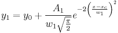
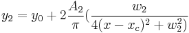

Contents |


One independent and two dependent variables, shared parameters.
Number: 6
Names: y0, xc, A1, A2, w1, w2
Meanings: y0 = offset, xc = center, A1 = area, A2 = area, w1 = width, w2 = width
Lower Bounds: w1 > 0.0, w2 > 0.0
Upper Bounds: none
FITFUNC\GaussianLorentz.fdf
Multiple Variables